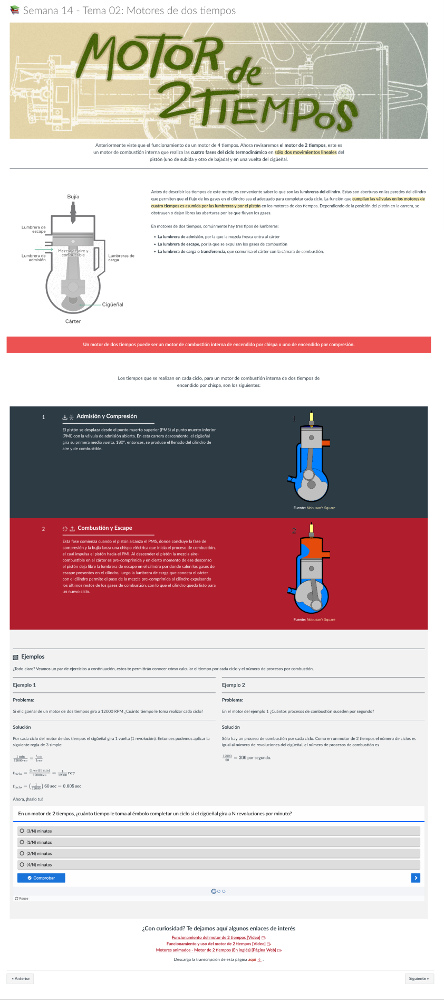
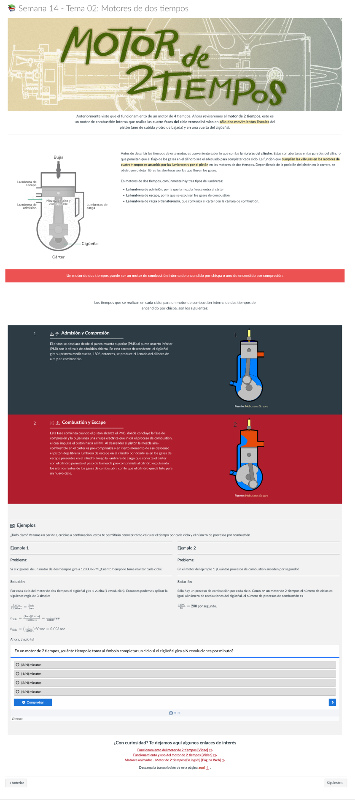

Cursos virtuales UTP
Experimentando con una nueva metodología de trabajo, participé en la creación de recursos gráficos para 2 cursos universitarios virtuales.
Durante el 2021, UTP decidió rediseñar ciertos cursos virtuales - y participé como diseñadora visual principal del proyecto. Para los cursos, diseñe lecturas en formato .PDF, presentaciones interactivas para Storyline 360, páginas web dentro del LMS y assets para animar en los videos didácticos y otros elementos gráficos variados para otros recursos educativos. El curso que rediseñamos fue el de Ciudadanía y Ética - aunque también generamos contenido nuevo para 3 semanas del curso de Termodinámica.

Procuré usar un estilo minimalista que coloque énfasis en el contenido de los recursos - para incentivar la lectura y revisión de los mismos.
Por otro lado, cuidé que la tipografía sea adecuada para cuidar su legibilidad y adecuado contraste.

Usé un estilo simple pero amigable y humano en las ilustraciones que creé, para diferenciar a los personajes y sumergir al estudiante en las narrativas planteadas. Al tratarse de un curso de ética, me pareció importante humanizar y darle diferentes personalidades a cada personaje planteado.
Ilustré múltiples banners y personajes para el curso. Revísalas con más detalle en mi página de Ilustraciones.
Además de piezas editoriales, diseñe múltiples Storylines con el contenido instruccional de los cursos. Estos incluyen ilustraciones (también hechas por mi) y elementos interactivos diseñados para fomentar el aprendizaje.


 
